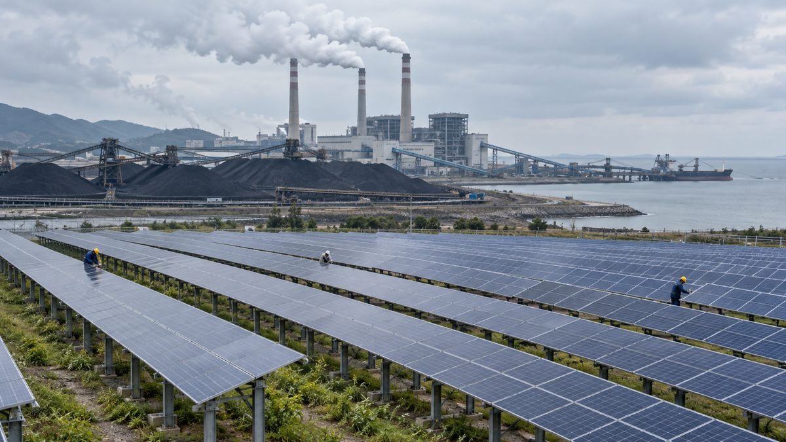

탈석탄 앞둔 충남, 재생에너지 고용효과 석탄의 2배 넘지만 절반은 도 밖으로 샌다

한국은행 대전세종충남본부 보고서…10억 원당 고용 태양광 3.93명·풍력 4.08명 대 석탄 1.65명, 기자재 외부 조달로 1.8~1.9명은 다른 지역 몫…"공급망 지역화·RE100 기업 유치해야"
석탄발전소 폐지가 몰린 충남에서 태양광·풍력 같은 재생에너지가 석탄화력보다 일자리를 두 배 넘게 만들지만, 그 효과의 절반가량은 충남 밖에서 생긴다는 분석이 나왔다. 한국은행 대전세종충남본부 정혜윤 경제조사팀 과장과 김기환 한남대 교수, 오인하 건국대 교수는 22일 공동 연구보고서 '에너지 공급구조 변화가 충남 지역경제에 미치는 영향'을 내놨다. 보고서에 따르면 2036년까지 전국에서 문을 닫는 노후 석탄발전 28기 가운데 14기(50%)가, 2037~2038년 무탄소 전환 대상 12기 가운데 8기(66.7%)가 태안·당진·보령 등 충남에 있다. 최종수요 10억 원당 고용유발 인원은 석탄화력 1.65명, LNG 복합 1.20명인 데 비해 태양광 3.93명, 풍력 4.08명, 연료전지 3.98명이었고, 생산유발계수도 석탄·LNG 1.11~1.24 대 재생에너지 1.78~1.88로 차이가 컸다. 그러나 재생에너지 고용 가운데 10억 원당 1.8~1.9명은 다른 지역에서 생겨, 기자재·부품을 도 밖에서 들여오는 탓에 고용효과의 절반이 충남에 남지 못하는 것으로 분석됐다. 연구진은 기자재·부품 제조부터 설치시공, 운영·유지보수까지 관련 기업을 지역에 끌어들여 공급망을 지역화하고, RE100 기업 등 재생전력 수요기업을 유치하며, 기존 발전소 부지와 송전망, 숙련 인력을 재생에너지·수소·ESS 기반으로 활용해 폐쇄 전부터 대체산업과 고용 전환을 준비해야 한다고 제언했다.
시민에너지 관점
같은 10억 원을 써도 재생에너지는 석탄보다 두 배 넘는 일자리를 만들지만, 그 절반이 도 밖으로 빠져나간다면 탈석탄 지역이 체감하는 전환의 몫은 줄어들 수밖에 없다. 재생에너지는 일자리가 적고 지역에 남는 것이 없다는 우려가 있지만, 이번 분석은 문제가 발전원이 아니라 누가 만들고 누가 짓느냐에 있음을 보여 준다. 이 보고서는 고용만 다뤘을 뿐 발전 수익이 어디로 가는지는 따지지 않았는데, 일자리와 함께 발전소의 지분과 배당까지 지역 주민과 지역 기업이 가져야 석탄 이후의 충남에 돈과 사람이 남는다. 발전소가 문을 닫기 전에 그 부지와 송전망을 주민과 지역이 주인이 되는 재생에너지 단지로 바꾸는 계획부터 세워야 한다.
출처: 중도일보 2026-10-22 방원기 기자 원문 보기
脱石炭を控えた忠清南道、再エネの雇用効果は石炭の2倍超だが半分は道外へ流出
韓国銀行大田世宗忠南本部の報告書…10億ウォン当たり雇用は太陽光3.93人・風力4.08人、石炭1.65人 機材の域外調達で1.8～1.9人は他地域の分…「サプライチェーンの地域化・RE100企業誘致を」
石炭火力発電所の廃止が集中する忠清南道で、太陽光や風力などの再生可能エネルギーは石炭火力の2倍を超える雇用を生むものの、その効果の約半分は道外で生じるとの分析が出た。韓国銀行大田世宗忠南本部のチョン・ヘユン経済調査チーム課長と、ハンナム大学のキム・ギファン教授、建国大学のオ・インハ教授は22日、共同研究報告書「エネルギー供給構造の変化が忠南地域経済に及ぼす影響」を公表した。報告書によると、2036年までに全国で閉鎖される老朽石炭火力28基のうち14基（50%）、2037～2038年の無炭素転換対象12基のうち8基（66.7%）が、泰安・唐津・保寧など忠清南道にある。最終需要10億ウォン当たりの雇用誘発人数は石炭火力1.65人、LNG複合1.20人に対し、太陽光3.93人、風力4.08人、燃料電池3.98人で、生産誘発係数も石炭・LNGの1.11～1.24に対し再エネは1.78～1.88と差が大きかった。ただし再エネの雇用のうち10億ウォン当たり1.8～1.9人は他地域で発生しており、機材・部品を道外から調達しているため雇用効果の半分が忠清南道に残らないと分析された。研究陣は、機材・部品の製造から設置施工、運営・保守までの関連企業を地域に誘致してサプライチェーンを地域化し、RE100企業など再エネ電力の需要企業を呼び込み、既存の発電所用地や送電網、熟練人材を再エネ・水素・ESSの基盤として活用し、閉鎖前から代替産業と雇用転換を準備すべきだと提言した。
市民エネルギーの視点
同じ10億ウォンを投じても再エネは石炭の2倍を超える雇用を生むが、その半分が道外に流れ出るなら、脱石炭地域が実感できる転換の取り分は小さくならざるを得ない。再エネは雇用が少なく地域に何も残らないという懸念もあるが、今回の分析は、問題が電源の種類ではなく、誰がつくり誰が建てるかにあることを示している。この報告書は雇用だけを扱い、発電収益の行き先までは検討していないが、雇用とともに発電所の持分と配当まで地域住民と地元企業が持ってこそ、石炭後の忠清南道にお金と人が残る。発電所が閉鎖される前に、その用地と送電網を住民と地域が持ち主となる再エネ団地に変える計画から立てるべきだ。
出典: 中道日報（Joongdo Ilbo） 2026-10-22 パン・ウォンギ記者 原文を読む
即将退煤的韩国忠清南道，可再生能源就业效应是煤电的2倍以上，但一半流向道外
韩国银行大田世宗忠南本部报告…每10亿韩元带动就业：光伏3.93人、风电4.08人，煤电1.65人；因设备外购，其中1.8至1.9人落在其他地区…建议推动供应链本地化、引进RE100企业
一项分析指出，在燃煤电厂集中关停的韩国忠清南道，光伏、风电等可再生能源创造的就业是煤电的两倍以上，但其中约一半的效应产生在道外。韩国银行大田世宗忠南本部经济调查组科长Jeong Hye-yun与韩南大学教授Kim Gi-hwan、建国大学教授Oh In-ha于22日发布共同研究报告《能源供应结构变化对忠南地区经济的影响》。报告显示，到2036年全国将关停的28台老旧燃煤机组中有14台（50%），2037至2038年无碳转换对象12台中有8台（66.7%），位于泰安、唐津、保宁等忠清南道地区。每10亿韩元最终需求带动的就业人数，煤电为1.65人、LNG联合循环为1.20人，而光伏为3.93人、风电4.08人、燃料电池3.98人；生产诱发系数也是煤电和LNG为1.11至1.24，可再生能源为1.78至1.88，差距明显。但可再生能源就业中每10亿韩元有1.8至1.9人产生在其他地区，原因是设备和零部件从道外采购，导致一半就业效应未能留在忠清南道。研究团队建议，从设备零部件制造到安装施工、运营维护，引进相关企业实现供应链本地化，吸引RE100企业等可再生电力需求企业，并把现有电厂用地、输电网和熟练人力作为可再生能源、氢能和储能的基础，在关停之前就着手准备替代产业和就业转型。
市民能源视角
同样投入10亿韩元，可再生能源创造的就业是煤电的两倍以上，但如果一半流到道外，退煤地区能感受到的转型红利必然缩水。有人担心可再生能源就业少、留不下什么，但这次分析表明，问题不在电源种类，而在于由谁制造、由谁建设。该报告只讨论了就业，没有分析发电收益流向何处；只有让当地居民和本地企业在获得就业的同时也拥有电站的股份和分红，退煤之后的忠清南道才能留住资金和人。应当在电厂关停之前，先制定计划，把这些用地和输电网变成由居民和地方当家作主的可再生能源园区。
来源: 中道日报（Joongdo Ilbo） 2026-10-22 Bang Won-gi 记者 查看原文
Chungnam, facing coal phase-out, sees renewables create over twice the jobs of coal, but half leak out of the province
Bank of Korea Daejeon-Sejong-Chungnam report: per 10 billion won, solar creates 3.93 jobs and wind 4.08 versus 1.65 for coal, but 1.8 to 1.9 go to other regions because equipment is sourced elsewhere; researchers urge localised supply chains and RE100 firms
Renewable energy such as solar and wind creates more than twice as many jobs as coal power in South Chungcheong Province (Chungnam), where Korea's coal plant closures are concentrated, but about half of that effect occurs outside the province, according to a new analysis. Jeong Hye-yun, a manager on the economic research team at the Bank of Korea's Daejeon-Sejong-Chungnam office, together with Professor Kim Gi-hwan of Hannam University and Professor Oh In-ha of Konkuk University, released a joint report on the 22nd titled "The impact of changes in the energy supply structure on Chungnam's regional economy." According to the report, 14 (50%) of the 28 ageing coal units to be closed nationwide by 2036, and 8 (66.7%) of the 12 units slated for carbon-free conversion in 2037-2038, are in Chungnam, centred on Taean, Dangjin and Boryeong. Per 10 billion won of final demand, coal power generates 1.65 jobs and LNG combined cycle 1.20, against 3.93 for solar, 4.08 for wind and 3.98 for fuel cells, and production-inducement coefficients are likewise 1.11-1.24 for coal and LNG versus 1.78-1.88 for renewables. Yet 1.8 to 1.9 of the renewable jobs per 10 billion won arise in other regions, meaning half the employment effect does not stay in Chungnam because equipment and components are sourced from outside. The researchers recommend attracting companies across manufacturing, installation and operation and maintenance to localise the supply chain, drawing in RE100 companies and other buyers of renewable power, and using existing plant sites, transmission lines and skilled workers as a base for renewables, hydrogen and energy storage, preparing replacement industries and job transitions before the plants close.
Citizen Energy View
Renewables create more than twice the jobs of coal for the same 10 billion won, but if half of them flow out of the province, the share of the transition that coal regions actually feel is bound to shrink. Some worry that renewables bring few jobs and leave little behind, but this analysis shows the problem lies not in the energy source but in who makes the equipment and who builds the plants. The report looks only at jobs, not at where generation revenue goes; only if local residents and local businesses hold equity and dividends in the plants, as well as the jobs, will money and people stay in Chungnam after coal. Before the plants close, plans should be drawn up to turn their sites and grid connections into renewable energy parks owned by residents and the region.
Source: Joongdo Ilbo 2026-10-22 Bang Won-gi Read the original